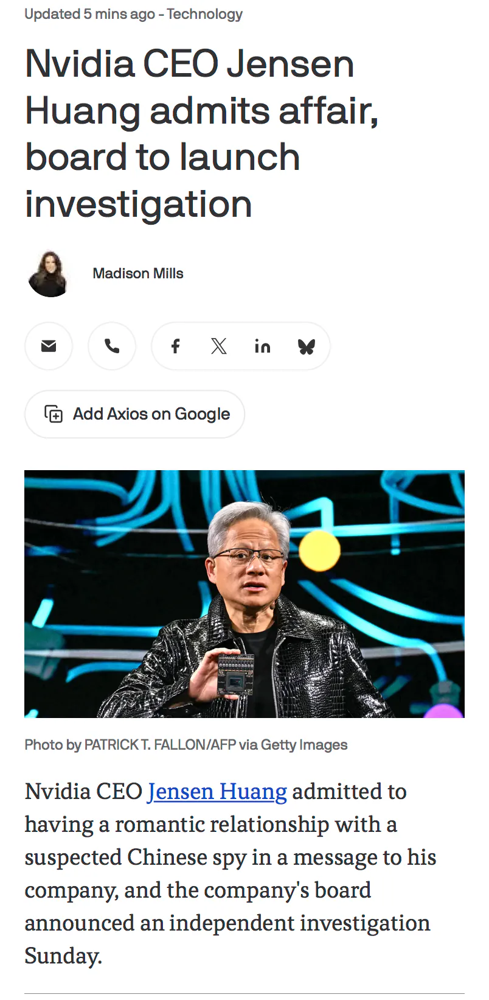

엔비디아 CEO 젠슨 황 불륜 인정, 이사회 조사 착수

엔비디아 CEO 젠슨 황 불륜 인정, 이사회 조사 착수
본인과 사업 이야기할 수 있을 정도의 입담 기술도 뛰어난데
플러팅 거는 스킬도 장난 아니고
실제로 밤일 때도 스킬 장난 아니었을 듯
성공한 남자 주변엔 다리 벌리고 대기중인 존예들이 그렇게 많을텐데 하필 왜 스파이여 ㅋㅋ
하이테크 CEO와 사업에 영향 끼칠 수 있을 정도로 말할 수 있는 사람은 잘 없겠지.
보통 그런 여자들은 프라이드가 강해서 쉽지 않은 여자인데
저 스파이는 밤에는 남자를 위한 암컷 그 자체가 되는 모습 보여주면. 정신 못 차릴만도 함.
특수교육받은 스파이의 무서움이네 ㄷㄷㄷ
1.스파이인줄 몰랐겠지
2.스파이니깐 젠슨황을 더 연구해서 취향공략함
젠슨황은 그냥 좀 똑똑하고 이뿌장한 여자랑 놀면서 이런저런 소리 했을뿐
위캔나스닥 나락이네 ㅋㅋㅋ
ㅁㅊ 하필 스파이한테 ㅋㅋㅋㅋ
반도체 시장은 첩첩 산중이네
슈가대디나 할것이지 뭐냐이게
젠슨황 엔비디아 지분 물어보니까 3.5%밖에 안가지고 있네? 이사람 바지야?? 어떻게 자기 회사 지분이 10%도 없지..
방중술 스킬 맥스 찍은 스파이라서 못 버텼나보네
최태원 첩, 젠슨 황 불륜... 이제 이재용 당신 차례다!
이재용은 솔로야
솔직히 적당히도 안이쁘던데. 좆빻음. 지 딸내미보다도 못생김